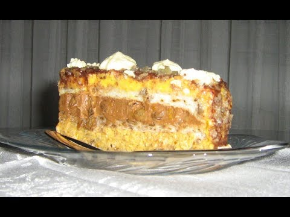

Kineska torta
Description
Torta napravena po tradicionalen nacin na kinezite! Sto poveke moze da se saka?
Ingredients
- 3 jaja
- 3 secera
- 1/2 peciva
Steps
- Umutiti jaja sa šećerom dodati brašno i 1/2 peciva, i soka od limuna.
- Sve istresti u podmazanu tepsiju i peći u zagrijanoj rerni.Pečenu koru ostaviti da se ohladi.
- Fil: U 500 ml. mlijeka, dodati višnjovače, malo cimeta 150 gr. riže. Kuvati dok se riža ne skuva.
- U to dodati izrendanu limunovu koru i ostaviti sve da se ohladi.
- Posebno umutiti 1 šlag od vanilije i 1 šlag od čokolade.
- Polovinu šlaga od vanilije i polovinu šlaga od čokolade dodati u prethodnu smjesu promiješati i filovati hladnu koru.
- Na kraju kolač premazati sa šlagom vanile i ukrašsiti preostalim šlagom od čokolade.